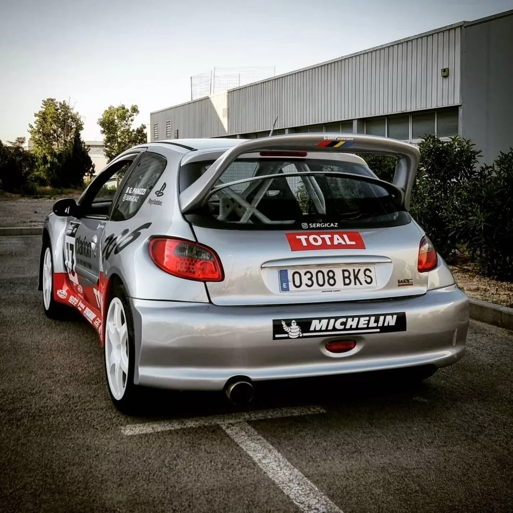
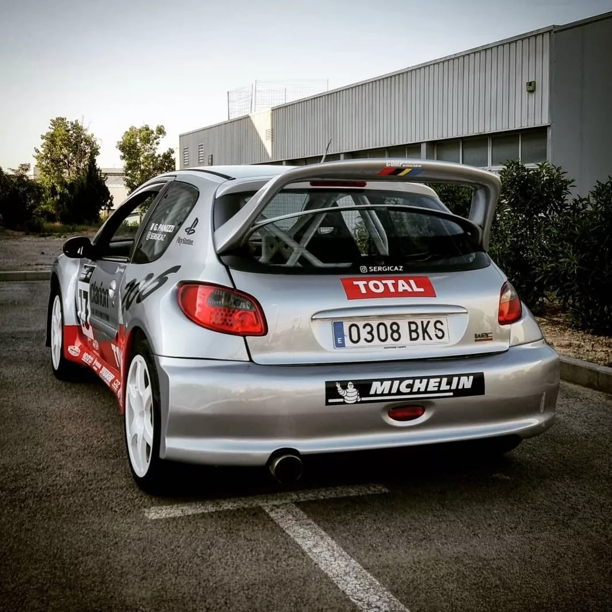

Velocidad máxima: ?
0-100 km/h: ?
Potencia máxima: 300cv
Longitud: 4,005m
Anchura: 1670mm
Altura: 1430mm
Batalla: 2,468mm
Peso: ?
Fue construido por Peugeot para participar en el Campeonato Mundial de Rally en el equipo oficial,
el Peugeot Sport, entre 1999 y 2003 donde logró tres campeonatos de constructores y dos de pilotos,
ambos ganados por Marcus Grönholm. El 206 WRC tuvo cuatro evoluciones y logró un total de veinticuatro
victorias y sesenta y cinco podios en el mundial.
Para poder homologar el 206 como World Rally Car, la marca tuvo que comercializar una versión limitada
de 2500 unidades llamada Peugeot 206 GT, con la única diferencia respecto del 206 convencional en que
esta tenía una longitud de 4,005m, la longitud necesaria para poder ser homologado como tal, alargando los
parachoques, y además, en 2003 se comercializó una versión deportiva del 206 de serie basada en su homólogo de competición
llamada Peugeot 206 RC.
El 206 WRC era un vehículo del segmento C y se le dotó de un motor con turbo de dos litros de
dieciséis válvulas que contaba con tracción a las cuatro ruedas, neumáticos de dieciocho
pulgadas de la marca Michelin y suspensiones de tipo McPherson fabricados por la propia Peugeot.